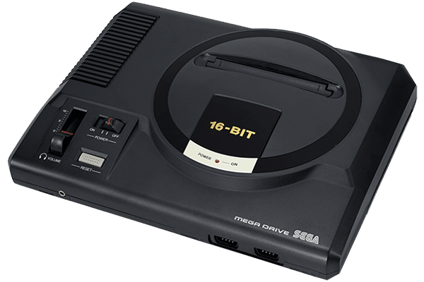

Sortie en France en 1990, la Megadrive de Sega est une des premières consoles 16 bit de sa génération. A l'époque, Sega frappe un grand coup car sa console sort un an avant la Super Nintendo avec une toute nouvelle mascotte qui enverra Alex Kidd à la retraite : Le hérisson Sonic. Avec la beauté de ses graphismes et la vitesse du jeu Sonic, la Megadrive fait l'effet d'une bombe qui relancera alors le duel entre Sega et Nintendo.